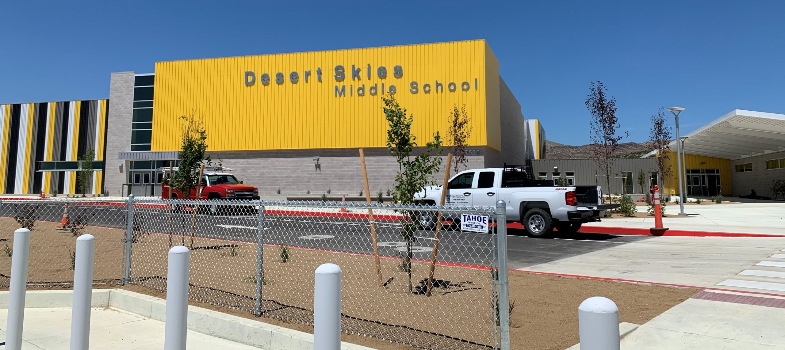

Desert Skies Middle School - New School Opening
The 2019-2020 school year granted me the opportunity to be part of an opening of a brand-new school, Desert Skies Middle School. Not just your typical brick and mortar school but a school that follows a 1:1 learning model. Throughout the school year, there were many challenges and differences from my time piloting the program at Traner Middle School. Additionally, there were challenges associated with this being a brand-new school.
Summer 2019
After wrapping up end-of-the-year tasks at Traner Middle School, my work shifted towards preparing the technology that would be deployed at the new 1:1 schools that would open for the 2019-2020 school year.
This work began by working alongside the other new 1:1 technicians on imaging the thousands of laptops that would be distributed to students at the new schools. After the laptops were imaged, we worked on staging the laptops at the new schools so that they were ready to be distributed to new students.
Once given the green light, we went to our respective schools to set up all the brand-new technology in the classrooms and buildings, which was an ongoing process throughout the school year.
As with the first year at Traner, Desert Skies decided to hand out devices to students before the start of the school year. On the distribution day, I worked with staff and students in ensuring that they received a device and were able to log in successfully.
2019-2020 School Year
For the 2019-2020 school year at Desert Skies, there were many similarities to my experiences at Traner Middle School.
The biggest differences, however, were that everything in the building was brand new and the amount of technology in the building. With everything being new, a good amount of time was spent working with vendors on addressing issues as well as with insurance on addressing insured devices. Additionally, more time was spent working with the school’s administrative staff on developing policies and procedures that fit the population of the school. These included coming up with a repair procedure and coming up with a fee system that worked for the school.
Roles and responsibilities stayed the same for the most part, but some responsibilities needed to be worked out as one of the other positions that was implemented at Traner as part of the 1:1 program was not implemented at the new 1:1 schools that opened.
With the COVID-19 pandemic, all schools were closed for the remainder of the school year after spring break. Luckily, since Desert Skies is a 1:1 school, we were better prepared to work remotely than other schools in the district. For the remainder of the school year, IT shifted to providing support remotely eliminating most of the interaction with students and staff.
Even with the pandemic, devices had to be collected at the end of the school year. At Desert Skies we determined that we would only collect devices for non-returning students, limiting the amount of contact with people. Devices were collected in a drive-thru fashion and were cleaned and repaired over the summer to ensure that the laptops were ready for the following school year. Additionally, this time was taken to file warranty and insurance claims on devices that were covered.
Summary/Outcomes
The 2019-2020 school year presented many challenges including opening a brand-new building, implementing a new program, physically supporting over 1,000 users, and a global pandemic.
The technology made available to the school was set up successfully and utilized by all staff and students. Many staff expressed their gratitude for how seamlessly everything was integrated.
Policies and procedures were also implemented and executed to ensure students were provided an optimal learning experience. At Desert Skies, the goal was and is to ensure that all students always have a functional device.
At the end of the year, we identified needs and improvements that needed to be implemented for the following school years to ensure that students were supported. One of these being ensuring all student devices are insured to ensure that the program can be sustainable.
Overall, there were many similarities and differences from my time piloting the program at Traner and being a part of opening a new school at Desert Skies, but I am grateful to be a part of both experiences and enjoyed seeing the learning opportunities introduced to students.